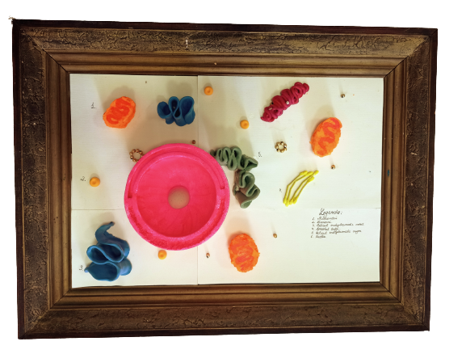
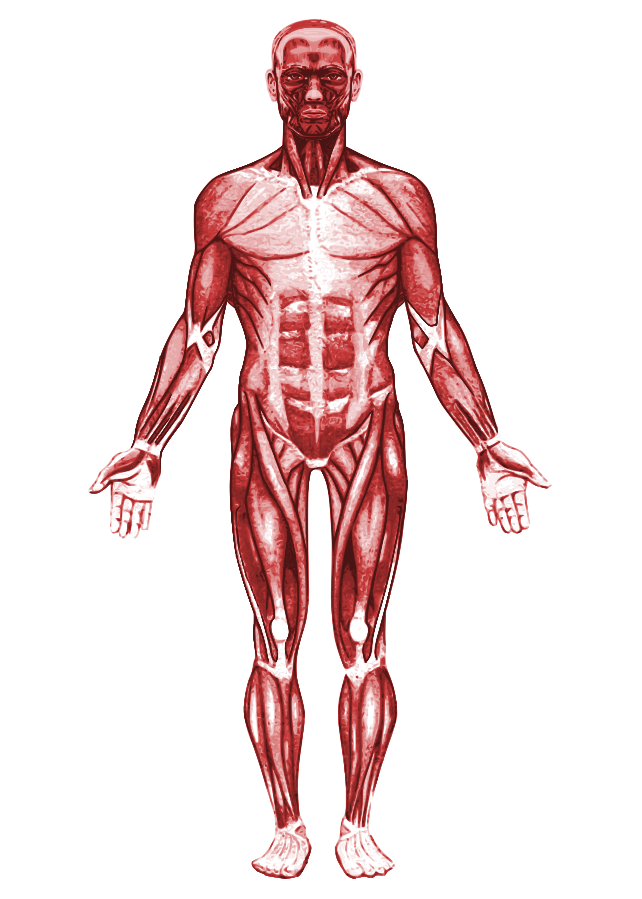

Un număr infinit de celule unite formează Universul, mediile de viață, ființele vii, inclusiv noi, oamenii. În mod metaforic, dorim să conferim viață unei celule prin intermediul unui tablou, ale cărui zile ajunseseră la final. Aceasta reprezintă unitatea structurală, genetică și funcțională de bază a tuturor organismelor vii, fiind Monalisa corpului nostru, la fel ca celebra pictură care a adus arta mai aproape de privitorii săi. De aceea, am decis să o prezentăm într-un tablou care să-i evidențieze adevărata valoare. În cadrul acestui proiect, am avut ocazia să punem în aplicare procesul de upcycling, unde o ramă, care era destul de deteriorată să fie aruncată, a găsit valoare în încadrarea unei celule.
Celula, așa cum am menționat, formează tot ceea ce ne înconjoară. "Nivelurile de organizare" ale corpului
uman sunt următoarele, în funcție de complexitate:
celule → țesuturi → organe → sisteme de organe →
organism.
Mai multe celule de același tip formează un țesut. Mai multe țesuturi de același tip formează
un organ. Mai multe organe de același tip formează un sistem de organe. Și mai multe sisteme de organe
formează un organism.
Corpul uman este alcătuit dintr-un număr mare de celule, fiecare cu rolul său în organism. Celulele sunt asemănătoare oamenilor, care își au propriul lor scop în lume. Asemenea oamenilor, celula are propriul său creier numit nucleu, care este format din nucleol, por nuclear și membrană nucleară. În plus față de nucleu, în structura celulei intră și mitocondriile, citoplasma, membrana celulară, reticulul endoplasmatic (rugos și neted), aparatul Golgi, lizozomii și ribozomii. Importanța celulei este majoră, deoarece cele mai complexe procese biochimice care asigură activitatea vitală a organismului au loc în interiorul acesteia. În celule sunt localizate, de asemenea, molecule de ADN și ARN, care au un rol biologic foarte important. Celulele au capacitatea de a exista fie individual (de exemplu, globulele albe din sânge), fie în grupuri (cum ar fi în țesutul nervos, prin gruparea neuronilor).
Nucleul conține toate informațiile genetice transmise de la părinți la copii prin procesul de reproducere, fiind codificate în substanța cunoscută sub numele de ADN. În cazul speciei umane, informația genetică este grupată în 23 de perechi de cromozomi, din care 22 sunt autosomi, iar o pereche este formată din cromozomii specifici sexului (XX pentru femei și XY pentru bărbați). Odată ce copilul s-a născut, acesta se conectează cu natura prin mama sa, care îi oferă tot ceea ce este necesar pentru dezvoltarea sa.
În concluzie, putem spune că corpul uman este reprezentat de tabloul alcătuit de celule, datorită cărora se poate oferi viața, iar prin intermediul cărora avem șansa de a descoperi întreaga unicitate a existenței în univers.